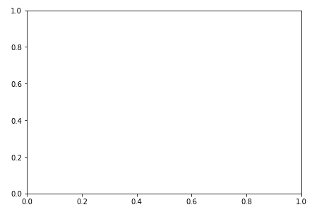
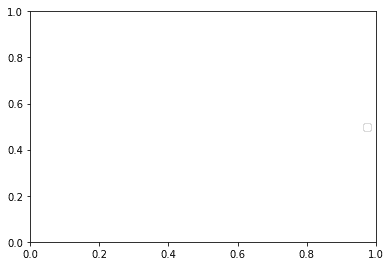
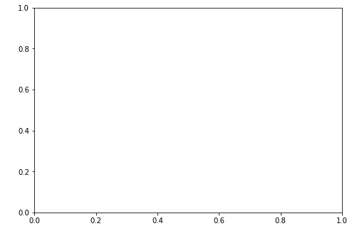
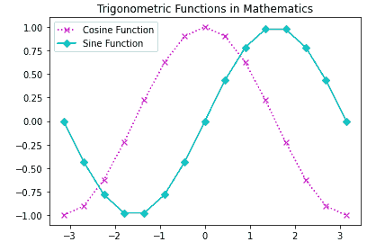

Matplotlib Axes类
在本教程中，我们将介绍 Matplotlib 库中基于状态的界面 (pyplot 模块)中的 Axes类。
带有数据空间的图像区域通常被称为轴对象。创建子地块的灵活的和基本的单位是轴线。
借助轴，可以在图中的任意位置绘图；因此，它为您提供了以灵活的方式创建子情节。
任何给定的图形都可能包含许多轴，但是给定的轴对象只能在一个图形中。
在二维的情况下，t 轴包含两个轴对象，在三维的情况下，轴包含三个轴对象。
要在图形中添加一个 Axes 对象，您只需要调用
add_axes()方法。add_axes()方法将返回轴对象，并在矩形【左、底、宽、高】的位置添加轴，所有这些量都以图形宽度和高度的分数表示。
axes()功能
该功能主要用于创建一个带参数的坐标轴对象。
- 参数主要是 4 个元素的列表【左、底、宽、高】
下面给出了这个函数的基本语法:
axes([left, bottom, width, height])
让我们看一个最简单的例子，我们将使用 axes()函数:
import matplotlib.pyplot as plt
fig = plt.figure()
#[left, bottom, width, height]
ax = plt.axes([0.2, 0.2, 0.9, 0.9])
其输出如下:

上面例子的解释:
在上面的代码中，
axes([0.2, 0.2, 0.9, 0.9])，其中第一个‘0.2’表示左侧轴到图形窗口边框的距离，即图形窗口总宽度的 20% 。第二个‘0.2’表示的是底侧轴线与图窗边框的距离，即图窗总高度的 20% 。
另外，第一个‘0.9’**表示从左到右的轴宽为 90%** 并且
后者‘0.9’表示自下而上的轴线高度为 80% 。
轴类中的成员函数
在下一节中，我们有 Axes类的成员函数，用于向图中添加不同的元素:
1.ax.legend()功能
使用轴类的legend()方法为绘图添加图例。
语法如下:
ax.legend(handles, labels, loc)
参数:
该函数采用三个参数:
参数标签用于指示字符串的序列，它主要处理 Line2D 的序列。
参数 loc 可以是字符串，也可以是整数，主要指定图例位置。
| 位置字符串 | 位置代码 | | 最好的 | Zero | | 右上方 | one | | 左上角 | Two | | 左下角 | three | | 右下角 | four | | 对吧 | five | | 中间偏左 | six | | 中间偏右 | seven | | 下死点 | eight | | 上中心 | nine | | 中心 | Ten |
下面我们有一个使用legend()方法的基本例子:
import matplotlib.pyplot as plt
fig = plt.figure()
#[left, bottom, width, height]
ax = plt.axes([0.2, 0.2, 0.8, 0.8])
ax.legend(labels = ('label1', 'label2'), loc = 'center right')
该代码的输出如下:

2.add_axes()功能
如果有需要，您也可以通过调用add_axes()方法(因此这是一种替代方法)将斧子对象添加到图形中。
该方法将返回轴对象，并在【左侧、底部、宽度、高度】位置添加轴，所有这些量都是图形宽度和高度的分数。
语法如下:
add_axes([left, bottom, width, height])
让我们介绍一个使用这种方法的例子:
import matplotlib.pyplot as plt
fig = plt.figure()
#[left, bottom, width, height]
ax = fig.add_axes([1, 1, 1, 1])
上述代码示例的输出如下:

3.ax.plot()功能
轴类最基本的方法是使用将一个数组的值与另一个数组的值绘制成线或标记。
该方法可以有一个可选格式字符串参数，主要用于指定颜色、样式和线的大小和标记。
使用颜色代码:
要指定颜色，我们将使用颜色代码:
| 性格；角色；字母 | 颜色 | | ' b ' | 蓝色 | | g′ | 格林（姓氏）；绿色的 | | r′ | 红色 | | ' b ' | 蓝色 | | c′ | 蓝绿色 | | m′ | 品红 | | 你好 | 黄色 | | k′ | 黑色 | | ' b ' | 蓝色 | | w ' | 白色的 |
使用标记代码:
要指定标记的样式，我们将使用:
| 性格；角色；字母 | 描述 | | '.' | 点标记 | | 的 | 圆形标记 | | x ' | X 标记 | | d′ | 钻石标记 | | ' h ' | 六边形标记 | | s | 正方形制造者 | | '+' | 加记号 |
使用线条样式:
您可以使用的各种线型如下:
| 性格；角色；字母 | 描述 | | '-' | 实线 | | '—' | 短划线 | | '-.' | 点划线 | | ':' | 点线 | | ' h ' | 六边形标记 |
语法如下:
plt.plot(X, Y, ‘CLM’)
参数:
X: 该参数表示 X 轴。
Y: 该参数表示 Y 轴
CLM: 代表颜色、线条和标记。
让我们来看一个上面解释的函数的例子:
import matplotlib.pyplot as plt
import numpy as np
X = np.linspace(-np.pi, np.pi, 15)
C = np.cos(X)
S = np.sin(X)
# [left, bottom, width, height]
ax = plt.axes([0.1, 0.1, 0.8, 0.8])
ax1 = ax.plot(X, C, 'mx:')
ax2 = ax.plot(X, S, 'cD-')
ax.legend(labels = ('Cosine Function', 'Sine Function'),loc = 'upper left')
ax.set_title("Trigonometric Functions in Mathematics")
plt.show()
上述代码片段的输出如下所示:

总结:
在本教程中，我们介绍了 matplotlib Axes类，以及如何在代码示例和输出中使用它。我们还介绍了这个类的各种不同功能以及如何使用它们。